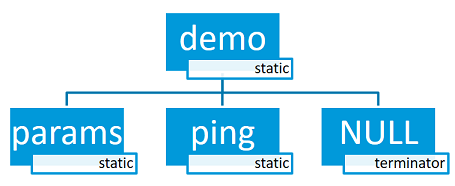

Shell¶
Overview¶
This module allows you to create and handle a shell with a user-defined command set. You can use it in examples where more than simple button or LED user interaction is required. This module is a Unix-like shell with these features:
Support for multiple instances.
Advanced cooperation with the Logging.
Support for static and dynamic commands.
Support for dictionary commands.
Smart command completion with the Tab key.
Built-in commands: clear, shell, colors, echo, history and resize.
Viewing recently executed commands using keys: ↑ ↓ or meta keys.
Text edition using keys: ←, →, Backspace, Delete, End, Home, Insert.
Support for ANSI escape codes:
VT100andESC[n~for cursor control and color printing.Support for editing multiline commands.
Built-in handler to display help for the commands.
Support for wildcards:
*and?.Support for meta keys.
Support for getopt and getopt_long.
Kconfig configuration to optimize memory usage.
Note
Some of these features have a significant impact on RAM and flash usage,
but many can be disabled when not needed. To default to options which
favor reduced RAM and flash requirements instead of features, you should
enable CONFIG_SHELL_MINIMAL and selectively enable just the
features you want.
The module can be connected to any transport for command input and output. At this point, the following transport layers are implemented:
Segger RTT
SMP
Telnet
UART
USB
DUMMY - not a physical transport layer.
Connecting to Segger RTT via TCP (on macOS, for example)¶
On macOS JLinkRTTClient won’t let you enter input. Instead, please use following procedure:
Open up a first Terminal window and enter:
JLinkRTTLogger -Device NRF52840_XXAA -RTTChannel 1 -if SWD -Speed 4000 ~/rtt.log
(change device if required)
Open up a second Terminal window and enter:
nc localhost 19021
Now you should have a network connection to RTT that will let you enter input to the shell.
Commands¶
Shell commands are organized in a tree structure and grouped into the following types:
Root command (level 0): Gathered and alphabetically sorted in a dedicated memory section.
Static subcommand (level > 0): Number and syntax must be known during compile time. Created in the software module.
Dynamic subcommand (level > 0): Number and syntax does not need to be known during compile time. Created in the software module.
Creating commands¶
Use the following macros for adding shell commands:
SHELL_CMD_REGISTER- Create root command. All root commands must have different name.SHELL_COND_CMD_REGISTER- Conditionally (if compile time flag is set) create root command. All root commands must have different name.SHELL_CMD_ARG_REGISTER- Create root command with arguments. All root commands must have different name.SHELL_COND_CMD_ARG_REGISTER- Conditionally (if compile time flag is set) create root command with arguments. All root commands must have different name.SHELL_CMD- Initialize a command.SHELL_COND_CMD- Initialize a command if compile time flag is set.SHELL_EXPR_CMD- Initialize a command if compile time expression is non-zero.SHELL_CMD_ARG- Initialize a command with arguments.SHELL_COND_CMD_ARG- Initialize a command with arguments if compile time flag is set.SHELL_EXPR_CMD_ARG- Initialize a command with arguments if compile time expression is non-zero.SHELL_STATIC_SUBCMD_SET_CREATE- Create a static subcommands array.SHELL_SUBCMD_DICT_SET_CREATE- Create a dictionary subcommands array.SHELL_DYNAMIC_CMD_CREATE- Create a dynamic subcommands array.
Commands can be created in any file in the system that includes include/shell/shell.h. All created commands are available for all shell instances.
Static commands¶
Example code demonstrating how to create a root command with static subcommands.
/* Creating subcommands (level 1 command) array for command "demo". */
SHELL_STATIC_SUBCMD_SET_CREATE(sub_demo,
SHELL_CMD(params, NULL, "Print params command.",
cmd_demo_params),
SHELL_CMD(ping, NULL, "Ping command.", cmd_demo_ping),
SHELL_SUBCMD_SET_END
);
/* Creating root (level 0) command "demo" */
SHELL_CMD_REGISTER(demo, &sub_demo, "Demo commands", NULL);
Example implementation can be found under following location: samples/subsys/shell/shell_module/src/main.c.
Dictionary commands¶
This is a special kind of static commands. Dictionary commands can be used every time you want to use a pair: (string <-> corresponding data) in a command handler. The string is usually a verbal description of a given data. The idea is to use the string as a command syntax that can be prompted by the shell and corresponding data can be used to process the command.
Let’s use an example. Suppose you created a command to set an ADC gain. It is a perfect place where a dictionary can be used. The dictionary would be a set of pairs: (string: gain_value, int: value) where int value could be used with the ADC driver API.
Abstract code for this task would look like this:
static int gain_cmd_handler(const struct shell *shell,
size_t argc, char **argv, void *data)
{
int gain;
/* data is a value corresponding to called command syntax */
gain = (int)data;
adc_set_gain(gain);
shell_print(shell, "ADC gain set to: %s\n"
"Value send to ADC driver: %d",
argv[0],
gain);
return 0;
}
SHELL_SUBCMD_DICT_SET_CREATE(sub_gain, gain_cmd_handler,
(gain_1, 1), (gain_2, 2), (gain_1_2, 3), (gain_1_4, 4)
);
SHELL_CMD_REGISTER(gain, &sub_gain, "Set ADC gain", NULL);
This is how it would look like in the shell:

Dynamic commands¶
Example code demonstrating how to create a root command with static and dynamic subcommands. At the beginning dynamic command list is empty. New commands can be added by typing:
dynamic add <new_dynamic_command>
Newly added commands can be prompted or autocompleted with the Tab key.

/* Buffer for 10 dynamic commands */
static char dynamic_cmd_buffer[10][50];
/* commands counter */
static uint8_t dynamic_cmd_cnt;
/* Function returning command dynamically created
* in dynamic_cmd_buffer.
*/
static void dynamic_cmd_get(size_t idx,
struct shell_static_entry *entry)
{
if (idx < dynamic_cmd_cnt) {
entry->syntax = dynamic_cmd_buffer[idx];
entry->handler = NULL;
entry->subcmd = NULL;
entry->help = "Show dynamic command name.";
} else {
/* if there are no more dynamic commands available
* syntax must be set to NULL.
*/
entry->syntax = NULL;
}
}
SHELL_DYNAMIC_CMD_CREATE(m_sub_dynamic_set, dynamic_cmd_get);
SHELL_STATIC_SUBCMD_SET_CREATE(m_sub_dynamic,
SHELL_CMD(add, NULL,"Add new command to dynamic_cmd_buffer and"
" sort them alphabetically.",
cmd_dynamic_add),
SHELL_CMD(execute, &m_sub_dynamic_set,
"Execute a command.", cmd_dynamic_execute),
SHELL_CMD(remove, &m_sub_dynamic_set,
"Remove a command from dynamic_cmd_buffer.",
cmd_dynamic_remove),
SHELL_CMD(show, NULL,
"Show all commands in dynamic_cmd_buffer.",
cmd_dynamic_show),
SHELL_SUBCMD_SET_END
);
SHELL_CMD_REGISTER(dynamic, &m_sub_dynamic,
"Demonstrate dynamic command usage.", cmd_dynamic);
Example implementation can be found under following location: samples/subsys/shell/shell_module/src/dynamic_cmd.c.
Commands execution¶
Each command or subcommand may have a handler. The shell executes the handler that is found deepest in the command tree and further subcommands (without a handler) are passed as arguments. Characters within parentheses are treated as one argument. If shell wont find a handler it will display an error message.
Commands can be also executed from a user application using any active backend
and a function shell_execute_cmd(), as shown in this example:
void main(void)
{
/* Below code will execute "clear" command on a DUMMY backend */
shell_execute_cmd(NULL, "clear");
/* Below code will execute "shell colors off" command on
* an UART backend
*/
shell_execute_cmd(shell_backend_uart_get_ptr(),
"shell colors off");
}
Enable the DUMMY backend by setting the Kconfig
CONFIG_SHELL_BACKEND_DUMMY option.
Command handler¶
Simple command handler implementation:
static int cmd_handler(const struct shell *shell, size_t argc,
char **argv)
{
ARG_UNUSED(argc);
ARG_UNUSED(argv);
shell_fprintf(shell, SHELL_INFO, "Print info message\n");
shell_print(shell, "Print simple text.");
shell_warn(shell, "Print warning text.");
shell_error(shell, "Print error text.");
return 0;
}
Function shell_fprintf() or the shell print macros:
shell_print, shell_info, shell_warn and
shell_error can be used from the command handler or from threads,
but not from an interrupt context. Instead, interrupt handlers should use
Logging for printing.
Command help¶
Every user-defined command or subcommand can have its own help description.
The help for commands and subcommands can be created with respective macros:
SHELL_CMD_REGISTER, SHELL_CMD_ARG_REGISTER,
SHELL_CMD, and SHELL_CMD_ARG.
Shell prints this help message when you call a command
or subcommand with -h or --help parameter.
Parent commands¶
In the subcommand handler, you can access both the parameters passed to
commands or the parent commands, depending on how you index argv.
When indexing
argvwith positive numbers, you can access the parameters.When indexing
argvwith negative numbers, you can access the parent commands.The subcommand to which the handler belongs has the
argvindex of 0.
static int cmd_handler(const struct shell *shell, size_t argc,
char **argv)
{
ARG_UNUSED(argc);
/* If it is a subcommand handler parent command syntax
* can be found using argv[-1].
*/
shell_print(shell, "This command has a parent command: %s",
argv[-1]);
/* Print this command syntax */
shell_print(shell, "This command syntax is: %s", argv[0]);
/* Print first argument */
shell_print(shell, "%s", argv[1]);
return 0;
}
Built-in commands¶
These commands are activated by CONFIG_SHELL_CMDS set to y.
clear - Clears the screen.
history - Shows the recently entered commands.
resize - Must be executed when terminal width is different than 80 characters or after each change of terminal width. It ensures proper multiline text display and ←, →, End, Home keys handling. Currently this command works only with UART flow control switched on. It can be also called with a subcommand:
default - Shell will send terminal width = 80 to the terminal and assume successful delivery.
These command needs extra activation:
CONFIG_SHELL_CMDS_RESIZEset toy.select - It can be used to set new root command. Exit to main command tree is with alt+r. This command needs extra activation:
CONFIG_SHELL_CMDS_SELECTset toy.shell - Root command with useful shell-related subcommands like:
echo - Toggles shell echo.
colors - Toggles colored syntax. This might be helpful in case of Bluetooth shell to limit the amount of transferred bytes.
stats - Shows shell statistics.
Tab Feature¶
The Tab button can be used to suggest commands or subcommands. This feature
is enabled by CONFIG_SHELL_TAB set to y.
It can also be used for partial or complete auto-completion of commands.
This feature is activated by
CONFIG_SHELL_TAB_AUTOCOMPLETION set to y.
When user starts writing a command and presses the Tab button then
the shell will do one of 3 possible things:
Autocomplete the command.
Prompts available commands and if possible partly completes the command.
Will not do anything if there are no available or matching commands.

History Feature¶
This feature enables commands history in the shell. It is activated by:
CONFIG_SHELL_HISTORY set to y. History can be accessed
using keys: ↑ ↓ or Ctrl + n and Ctrl + p
if meta keys are active.
Number of commands that can be stored depends on size
of CONFIG_SHELL_HISTORY_BUFFER parameter.
Wildcards Feature¶
The shell module can handle wildcards. Wildcards are interpreted correctly
when expanded command and its subcommands do not have a handler. For example,
if you want to set logging level to err for the app and app_test
modules you can execute the following command:
log enable err a*

This feature is activated by CONFIG_SHELL_WILDCARD set to y.
Meta Keys Feature¶
The shell module supports the following meta keys:
Meta keys |
Action |
|---|---|
Ctrl + a |
Moves the cursor to the beginning of the line. |
Ctrl + b |
Moves the cursor backward one character. |
Ctrl + c |
Preserves the last command on the screen and starts a new command in a new line. |
Ctrl + d |
Deletes the character under the cursor. |
Ctrl + e |
Moves the cursor to the end of the line. |
Ctrl + f |
Moves the cursor forward one character. |
Ctrl + k |
Deletes from the cursor to the end of the line. |
Ctrl + l |
Clears the screen and leaves the currently typed command at the top of the screen. |
Ctrl + n |
Moves in history to next entry. |
Ctrl + p |
Moves in history to previous entry. |
Ctrl + u |
Clears the currently typed command. |
Ctrl + w |
Removes the word or part of the word to the left of the cursor. Words separated by period instead of space are treated as one word. |
Alt + b |
Moves the cursor backward one word. |
Alt + f |
Moves the cursor forward one word. |
This feature is activated by CONFIG_SHELL_METAKEYS set to y.
Getopt Feature¶
Some shell users apart from subcommands might need to use options as well.
the arguments string, looking for supported options. Typically, this task
is accomplished by the getopt familly functions.
For this purpose shell supports the getopt and getopt_long libraries available
in the FreeBSD project. This feature is activated by:
CONFIG_GETOPT set to y and CONFIG_GETOPT_LONG
set to y.
This feature can be used in thread safe as well as non thread safe manner. The former is full compatible with regular getopt usage while the latter a bit differs.
An example non-thread safe usage:
char *cvalue = NULL;
while ((char c = getopt(argc, argv, "abhc:")) != -1) {
switch (c) {
case 'c':
cvalue = optarg;
break;
default:
break;
}
}
An example thread safe usage:
char *cvalue = NULL;
struct getopt_state *state;
while ((char c = getopt(argc, argv, "abhc:")) != -1) {
state = getopt_state_get();
switch (c) {
case 'c':
cvalue = state->optarg;
break;
default:
break;
}
}
Thread safe getopt functionality is activated by
CONFIG_SHELL_GETOPT set to y.
Obscured Input Feature¶
With the obscured input feature, the shell can be used for implementing a login prompt or other user interaction whereby the characters the user types should not be revealed on screen, such as when entering a password.
Once the obscured input has been accepted, it is normally desired to return the
shell to normal operation. Such runtime control is possible with the
shell_obscure_set function.
An example of login and logout commands using this feature is located in samples/subsys/shell/shell_module/src/main.c and the config file samples/subsys/shell/shell_module/prj_login.conf.
This feature is activated upon startup by CONFIG_SHELL_START_OBSCURED
set to y. With this set either way, the option can still be controlled later
at runtime. CONFIG_SHELL_CMDS_SELECT is useful to prevent entry
of any other command besides a login command, by means of the
shell_set_root_cmd function. Likewise, CONFIG_SHELL_PROMPT_UART
allows you to set the prompt upon startup, but it can be changed later with the
shell_prompt_change function.
Shell Logger Backend Feature¶
Shell instance can act as the Logging backend. Shell ensures that log
messages are correctly multiplexed with shell output. Log messages from logger
thread are enqueued and processed in the shell thread. Logger thread will block
for configurable amount of time if queue is full, blocking logger thread context
for that time. Oldest log message is removed from the queue after timeout and
new message is enqueued. Use the shell stats show command to retrieve
number of log messages dropped by the shell instance. Log queue size and timeout
are SHELL_DEFINE arguments.
This feature is activated by: CONFIG_SHELL_LOG_BACKEND set to y.
Warning
Enqueuing timeout must be set carefully when multiple backends are used in the system. The shell instance could have a slow transport or could block, for example, by a UART with hardware flow control. If timeout is set too high, the logger thread could be blocked and impact other logger backends.
Warning
As the shell is a complex logger backend, it can not output logs if
the application crashes before the shell thread is running. In this
situation, you can enable one of the simple logging backends instead,
such as UART (CONFIG_LOG_BACKEND_UART) or
RTT (CONFIG_LOG_BACKEND_RTT), which are available earlier
during system initialization.
Usage¶
To create a new shell instance user needs to activate requested
backend using menuconfig.
The following code shows a simple use case of this library:
void main(void)
{
}
static int cmd_demo_ping(const struct shell *shell, size_t argc,
char **argv)
{
ARG_UNUSED(argc);
ARG_UNUSED(argv);
shell_print(shell, "pong");
return 0;
}
static int cmd_demo_params(const struct shell *shell, size_t argc,
char **argv)
{
int cnt;
shell_print(shell, "argc = %d", argc);
for (cnt = 0; cnt < argc; cnt++) {
shell_print(shell, " argv[%d] = %s", cnt, argv[cnt]);
}
return 0;
}
/* Creating subcommands (level 1 command) array for command "demo". */
SHELL_STATIC_SUBCMD_SET_CREATE(sub_demo,
SHELL_CMD(params, NULL, "Print params command.",
cmd_demo_params),
SHELL_CMD(ping, NULL, "Ping command.", cmd_demo_ping),
SHELL_SUBCMD_SET_END
);
/* Creating root (level 0) command "demo" without a handler */
SHELL_CMD_REGISTER(demo, &sub_demo, "Demo commands", NULL);
/* Creating root (level 0) command "version" */
SHELL_CMD_REGISTER(version, NULL, "Show kernel version", cmd_version);
Users may use the Tab key to complete a command/subcommand or to see the available subcommands for the currently entered command level. For example, when the cursor is positioned at the beginning of the command line and the Tab key is pressed, the user will see all root (level 0) commands:
clear demo shell history log resize version
Note
To view the subcommands that are available for a specific command, you must first type a space after this command and then hit Tab.
These commands are registered by various modules, for example:
clear, shell, history, and resize are built-in commands which have been registered by subsys/shell/shell.c
demo and version have been registered in example code above by main.c
log has been registered by subsys/logging/log_cmds.c
Then, if a user types a demo command and presses the Tab key, the shell will only print the subcommands registered for this command:
params ping
API Reference¶
- group shell_api
Shell API.
Defines
-
SHELL_CMD_ARG_REGISTER(syntax, subcmd, help, handler, mandatory, optional)¶
Macro for defining and adding a root command (level 0) with required number of arguments.
Note
Each root command shall have unique syntax. If a command will be called with wrong number of arguments shell will print an error message and command handler will not be called.
- Parameters
syntax – [in] Command syntax (for example: history).
subcmd – [in] Pointer to a subcommands array.
help – [in] Pointer to a command help string.
handler – [in] Pointer to a function handler.
mandatory – [in] Number of mandatory arguments includig command name.
optional – [in] Number of optional arguments.
-
SHELL_COND_CMD_ARG_REGISTER(flag, syntax, subcmd, help, handler, mandatory, optional)¶
Macro for defining and adding a conditional root command (level 0) with required number of arguments.
Macro can be used to create a command which can be conditionally present. It is and alternative to #ifdefs around command registration and command handler. If command is disabled handler and subcommands are removed from the application.
See also
SHELL_CMD_ARG_REGISTER for details.
- Parameters
flag – [in] Compile time flag. Command is present only if flag exists and equals 1.
syntax – [in] Command syntax (for example: history).
subcmd – [in] Pointer to a subcommands array.
help – [in] Pointer to a command help string.
handler – [in] Pointer to a function handler.
mandatory – [in] Number of mandatory arguments includig command name.
optional – [in] Number of optional arguments.
-
SHELL_CMD_REGISTER(syntax, subcmd, help, handler)¶
Macro for defining and adding a root command (level 0) with arguments.
Note
All root commands must have different name.
- Parameters
syntax – [in] Command syntax (for example: history).
subcmd – [in] Pointer to a subcommands array.
help – [in] Pointer to a command help string.
handler – [in] Pointer to a function handler.
-
SHELL_COND_CMD_REGISTER(flag, syntax, subcmd, help, handler)¶
Macro for defining and adding a conditional root command (level 0) with arguments.
See also
- Parameters
flag – [in] Compile time flag. Command is present only if flag exists and equals 1.
syntax – [in] Command syntax (for example: history).
subcmd – [in] Pointer to a subcommands array.
help – [in] Pointer to a command help string.
handler – [in] Pointer to a function handler.
-
SHELL_STATIC_SUBCMD_SET_CREATE(name, ...)¶
Macro for creating a subcommand set. It must be used outside of any function body.
Example usage: SHELL_STATIC_SUBCMD_SET_CREATE( foo, SHELL_CMD(abc, …), SHELL_CMD(def, …), SHELL_SUBCMD_SET_END )
- Parameters
name – [in] Name of the subcommand set.
... – [in] List of commands created with SHELL_CMD_ARG or or SHELL_CMD
-
SHELL_SUBCMD_SET_END¶
Define ending subcommands set.
-
SHELL_DYNAMIC_CMD_CREATE(name, get)¶
Macro for creating a dynamic entry.
- Parameters
name – [in] Name of the dynamic entry.
get – [in] Pointer to the function returning dynamic commands array
-
SHELL_CMD_ARG(syntax, subcmd, help, handler, mand, opt)¶
Initializes a shell command with arguments.
Note
If a command will be called with wrong number of arguments shell will print an error message and command handler will not be called.
- Parameters
syntax – [in] Command syntax (for example: history).
subcmd – [in] Pointer to a subcommands array.
help – [in] Pointer to a command help string.
handler – [in] Pointer to a function handler.
mand – [in] Number of mandatory arguments includig command name.
opt – [in] Number of optional arguments.
-
SHELL_COND_CMD_ARG(flag, syntax, subcmd, help, handler, mand, opt)¶
Initializes a conditional shell command with arguments.
See also
SHELL_CMD_ARG. Based on the flag, creates a valid entry or an empty command which is ignored by the shell. It is an alternative to #ifdefs around command registration and command handler. However, empty structure is present in the flash even if command is disabled (subcommands and handler are removed). Macro internally handles case if flag is not defined so flag must be provided without any wrapper, e.g.: SHELL_COND_CMD_ARG(CONFIG_FOO, …)
- Parameters
flag – [in] Compile time flag. Command is present only if flag exists and equals 1.
syntax – [in] Command syntax (for example: history).
subcmd – [in] Pointer to a subcommands array.
help – [in] Pointer to a command help string.
handler – [in] Pointer to a function handler.
mand – [in] Number of mandatory arguments includig command name.
opt – [in] Number of optional arguments.
-
SHELL_EXPR_CMD_ARG(_expr, _syntax, _subcmd, _help, _handler, _mand, _opt)¶
Initializes a conditional shell command with arguments if expression gives non-zero result at compile time.
See also
SHELL_CMD_ARG. Based on the expression, creates a valid entry or an empty command which is ignored by the shell. It should be used instead of SHELL_COND_CMD_ARG if condition is not a single configuration flag, e.g.: SHELL_EXPR_CMD_ARG(IS_ENABLED(CONFIG_FOO) && IS_ENABLED(CONFIG_FOO_SETTING_1), …)
- Parameters
_expr – [in] Expression.
_syntax – [in] Command syntax (for example: history).
_subcmd – [in] Pointer to a subcommands array.
_help – [in] Pointer to a command help string.
_handler – [in] Pointer to a function handler.
_mand – [in] Number of mandatory arguments includig command name.
_opt – [in] Number of optional arguments.
-
SHELL_CMD(_syntax, _subcmd, _help, _handler)¶
Initializes a shell command.
- Parameters
_syntax – [in] Command syntax (for example: history).
_subcmd – [in] Pointer to a subcommands array.
_help – [in] Pointer to a command help string.
_handler – [in] Pointer to a function handler.
-
SHELL_COND_CMD(_flag, _syntax, _subcmd, _help, _handler)¶
Initializes a conditional shell command.
See also
- Parameters
_flag – [in] Compile time flag. Command is present only if flag exists and equals 1.
_syntax – [in] Command syntax (for example: history).
_subcmd – [in] Pointer to a subcommands array.
_help – [in] Pointer to a command help string.
_handler – [in] Pointer to a function handler.
-
SHELL_EXPR_CMD(_expr, _syntax, _subcmd, _help, _handler)¶
Initializes shell command if expression gives non-zero result at compile time.
See also
- Parameters
_expr – [in] Compile time expression. Command is present only if expression is non-zero.
_syntax – [in] Command syntax (for example: history).
_subcmd – [in] Pointer to a subcommands array.
_help – [in] Pointer to a command help string.
_handler – [in] Pointer to a function handler.
-
SHELL_CMD_DICT_CREATE(_data, _handler)¶
-
SHELL_SUBCMD_DICT_SET_CREATE(_name, _handler, ...)¶
Initializes shell dictionary commands.
This is a special kind of static commands. Dictionary commands can be used every time you want to use a pair: (string <-> corresponding data) in a command handler. The string is usually a verbal description of a given data. The idea is to use the string as a command syntax that can be prompted by the shell and corresponding data can be used to process the command.
Example usage: static int my_handler(const struct shell *shell, size_t argc, char **argv, void *data) { int val = (int)data;
See also
shell_print(shell, “(syntax, value) : (%s, %d)”, argv[0], val); return 0; }
SHELL_SUBCMD_DICT_SET_CREATE(sub_dict_cmds, my_handler, (value_0, 0), (value_1, 1), (value_2, 2), (value_3, 3) ); SHELL_CMD_REGISTER(dictionary, &sub_dict_cmds, NULL, NULL);
- Parameters
_name – [in] Name of the dictionary subcommand set
_handler – [in] Command handler common for all dictionary commands.
... – [in] Dictionary pairs: (command_syntax, value). Value will be passed to the _handler as user data.
-
SHELL_DEFAULT_BACKEND_CONFIG_FLAGS¶
-
SHELL_DEFINE(_name, _prompt, _transport_iface, _log_queue_size, _log_timeout, _shell_flag)¶
Macro for defining a shell instance.
- Parameters
_name – [in] Instance name.
_prompt – [in] Shell default prompt string.
_transport_iface – [in] Pointer to the transport interface.
_log_queue_size – [in] Logger processing queue size.
_log_timeout – [in] Logger thread timeout in milliseconds on full log queue. If queue is full logger thread is blocked for given amount of time before log message is dropped.
_shell_flag – [in] Shell output newline sequence.
-
SHELL_NORMAL¶
Terminal default text color for shell_fprintf function.
-
SHELL_INFO¶
Green text color for shell_fprintf function.
-
SHELL_OPTION¶
Cyan text color for shell_fprintf function.
-
SHELL_WARNING¶
Yellow text color for shell_fprintf function.
-
SHELL_ERROR¶
Red text color for shell_fprintf function.
-
shell_info(_sh, _ft, ...)¶
Print info message to the shell.
See shell_fprintf.
- Parameters
_sh – [in] Pointer to the shell instance.
_ft – [in] Format string.
... – [in] List of parameters to print.
-
shell_print(_sh, _ft, ...)¶
Print normal message to the shell.
See shell_fprintf.
- Parameters
_sh – [in] Pointer to the shell instance.
_ft – [in] Format string.
... – [in] List of parameters to print.
-
shell_warn(_sh, _ft, ...)¶
Print warning message to the shell.
See shell_fprintf.
- Parameters
_sh – [in] Pointer to the shell instance.
_ft – [in] Format string.
... – [in] List of parameters to print.
-
shell_error(_sh, _ft, ...)¶
Print error message to the shell.
See shell_fprintf.
- Parameters
_sh – [in] Pointer to the shell instance.
_ft – [in] Format string.
... – [in] List of parameters to print.
-
SHELL_CMD_HELP_PRINTED¶
Typedefs
-
typedef void (*shell_dynamic_get)(size_t idx, struct shell_static_entry *entry)¶
Shell dynamic command descriptor.
Function shall fill the received shell_static_entry structure with requested (idx) dynamic subcommand data. If there is more than one dynamic subcommand available, the function shall ensure that the returned commands: entry->syntax are sorted in alphabetical order. If idx exceeds the available dynamic subcommands, the function must write to entry->syntax NULL value. This will indicate to the shell module that there are no more dynamic commands to read.
-
typedef int (*shell_cmd_handler)(const struct shell *shell, size_t argc, char **argv)¶
Shell command handler prototype.
- Param shell
Shell instance.
- Param argc
Arguments count.
- Param argv
Arguments.
- Retval 0
Successful command execution.
- Retval 1
Help printed and command not executed.
- Retval -EINVAL
Argument validation failed.
- Retval -ENOEXEC
Command not executed.
-
typedef int (*shell_dict_cmd_handler)(const struct shell *shell, size_t argc, char **argv, void *data)¶
Shell dictionary command handler prototype.
- Param shell
Shell instance.
- Param argc
Arguments count.
- Param argv
Arguments.
- Param data
Pointer to the user data.
- Retval 0
Successful command execution.
- Retval 1
Help printed and command not executed.
- Retval -EINVAL
Argument validation failed.
- Retval -ENOEXEC
Command not executed.
-
typedef void (*shell_transport_handler_t)(enum shell_transport_evt evt, void *context)¶
Enums
-
enum shell_receive_state¶
Values:
-
enumerator SHELL_RECEIVE_DEFAULT¶
-
enumerator SHELL_RECEIVE_ESC¶
-
enumerator SHELL_RECEIVE_ESC_SEQ¶
-
enumerator SHELL_RECEIVE_TILDE_EXP¶
-
enumerator SHELL_RECEIVE_DEFAULT¶
-
enum shell_state¶
Values:
-
enumerator SHELL_STATE_UNINITIALIZED¶
-
enumerator SHELL_STATE_INITIALIZED¶
-
enumerator SHELL_STATE_ACTIVE¶
-
enumerator SHELL_STATE_PANIC_MODE_ACTIVE¶
Panic activated.
-
enumerator SHELL_STATE_PANIC_MODE_INACTIVE¶
Panic requested, not supported.
-
enumerator SHELL_STATE_UNINITIALIZED¶
-
enum shell_transport_evt¶
Shell transport event.
Values:
-
enumerator SHELL_TRANSPORT_EVT_RX_RDY¶
-
enumerator SHELL_TRANSPORT_EVT_TX_RDY¶
-
enumerator SHELL_TRANSPORT_EVT_RX_RDY¶
Functions
-
const struct device *shell_device_lookup(size_t idx, const char *prefix)¶
Get by index a device that matches .
This can be used, for example, to identify I2C_1 as the second I2C device.
Devices that failed to initialize or do not have a non-empty name are excluded from the candidates for a match.
- Parameters
idx – the device number starting from zero.
prefix – optional name prefix used to restrict candidate devices. Indexing is done relative to devices with names that start with this text. Pass null if no prefix match is required.
-
int shell_init(const struct shell *shell, const void *transport_config, struct shell_backend_config_flags cfg_flags, bool log_backend, uint32_t init_log_level)¶
Function for initializing a transport layer and internal shell state.
- Parameters
shell – [in] Pointer to shell instance.
transport_config – [in] Transport configuration during initialization.
cfg_flags – [in] Initial backend configuration flags. Shell will copy this data.
log_backend – If true, the console will be used as logger backend.
init_log_level – [in] Default severity level for the logger.
- Returns
Standard error code.
-
void shell_uninit(const struct shell *shell, shell_uninit_cb_t cb)¶
Uninitializes the transport layer and the internal shell state.
- Parameters
shell – Pointer to shell instance.
cb – Callback called when uninitialization is completed.
-
int shell_start(const struct shell *shell)¶
Function for starting shell processing.
- Parameters
shell – Pointer to the shell instance.
- Returns
Standard error code.
-
int shell_stop(const struct shell *shell)¶
Function for stopping shell processing.
- Parameters
shell – Pointer to shell instance.
- Returns
Standard error code.
-
void shell_fprintf(const struct shell *shell, enum shell_vt100_color color, const char *fmt, ...)¶
printf-like function which sends formatted data stream to the shell.
This function can be used from the command handler or from threads, but not from an interrupt context.
- Parameters
shell – [in] Pointer to the shell instance.
color – [in] Printed text color.
fmt – [in] Format string.
... – [in] List of parameters to print.
-
void shell_vfprintf(const struct shell *shell, enum shell_vt100_color color, const char *fmt, va_list args)¶
vprintf-like function which sends formatted data stream to the shell.
This function can be used from the command handler or from threads, but not from an interrupt context. It is similar to shell_fprintf() but takes a va_list instead of variable arguments.
- Parameters
shell – [in] Pointer to the shell instance.
color – [in] Printed text color.
fmt – [in] Format string.
args – [in] List of parameters to print.
-
void shell_hexdump_line(const struct shell *shell, unsigned int offset, const uint8_t *data, size_t len)¶
Print a line of data in hexadecimal format.
Each line shows the offset, bytes and then ASCII representation.
For example:
00008010: 20 25 00 20 2f 48 00 08 80 05 00 20 af 46 00 | %. /H.. … .F. |
- Parameters
shell – [in] Pointer to the shell instance.
offset – [in] Offset to show for this line.
data – [in] Pointer to data.
len – [in] Length of data.
-
void shell_hexdump(const struct shell *shell, const uint8_t *data, size_t len)¶
Print data in hexadecimal format.
- Parameters
shell – [in] Pointer to the shell instance.
data – [in] Pointer to data.
len – [in] Length of data.
-
void shell_process(const struct shell *shell)¶
Process function, which should be executed when data is ready in the transport interface. To be used if shell thread is disabled.
- Parameters
shell – [in] Pointer to the shell instance.
-
int shell_prompt_change(const struct shell *shell, const char *prompt)¶
Change displayed shell prompt.
- Parameters
shell – [in] Pointer to the shell instance.
prompt – [in] New shell prompt.
- Returns
0 Success.
- Returns
-EINVAL Pointer to new prompt is not correct.
-
void shell_help(const struct shell *shell)¶
Prints the current command help.
Function will print a help string with: the currently entered command and subcommands (if they exist).
- Parameters
shell – [in] Pointer to the shell instance.
-
int shell_execute_cmd(const struct shell *shell, const char *cmd)¶
Execute command.
Pass command line to shell to execute.
Note: This by no means makes any of the commands a stable interface, so this function should only be used for debugging/diagnostic.
This function must not be called from shell command context!
- Parameters
shell – [in] Pointer to the shell instance. It can be NULL when the
CONFIG_SHELL_BACKEND_DUMMYoption is enabled.cmd – [in] Command to be executed.
- Returns
Result of the execution
-
int shell_set_root_cmd(const char *cmd)¶
Set root command for all shell instances.
It allows setting from the code the root command. It is an equivalent of calling select command with one of the root commands as the argument (e.g “select log”) except it sets command for all shell instances.
- Parameters
cmd – String with one of the root commands or null pointer to reset.
- Return values
0 – if root command is set.
-EINVAL – if invalid root command is provided.
-
void shell_set_bypass(const struct shell *shell, shell_bypass_cb_t bypass)¶
Set bypass callback.
Bypass callback is called whenever data is received. Shell is bypassed and data is passed directly to the callback. Use null to disable bypass functionality.
- Parameters
shell – [in] Pointer to the shell instance.
bypass – [in] Bypass callback or null to disable.
-
int shell_insert_mode_set(const struct shell *shell, bool val)¶
Allow application to control text insert mode. Value is modified atomically and the previous value is returned.
- Parameters
shell – [in] Pointer to the shell instance.
val – [in] Insert mode.
- Return values
0 – or 1: previous value
-EINVAL – if shell is NULL.
-
int shell_use_colors_set(const struct shell *shell, bool val)¶
Allow application to control whether terminal output uses colored syntax. Value is modified atomically and the previous value is returned.
- Parameters
shell – [in] Pointer to the shell instance.
val – [in] Color mode.
- Return values
0 – or 1: previous value
-EINVAL – if shell is NULL.
-
int shell_echo_set(const struct shell *shell, bool val)¶
Allow application to control whether user input is echoed back. Value is modified atomically and the previous value is returned.
- Parameters
shell – [in] Pointer to the shell instance.
val – [in] Echo mode.
- Return values
0 – or 1: previous value
-EINVAL – if shell is NULL.
-
int shell_obscure_set(const struct shell *shell, bool obscure)¶
Allow application to control whether user input is obscured with asterisks useful for implementing passwords. Value is modified atomically and the previous value is returned.
- Parameters
shell – [in] Pointer to the shell instance.
obscure – [in] Obscure mode.
- Return values
0 – or 1: previous value.
-EINVAL – if shell is NULL.
-
int shell_mode_delete_set(const struct shell *shell, bool val)¶
Allow application to control whether the delete key backspaces or deletes. Value is modified atomically and the previous value is returned.
- Parameters
shell – [in] Pointer to the shell instance.
val – [in] Delete mode.
- Return values
0 – or 1: previous value
-EINVAL – if shell is NULL.
Variables
-
const struct log_backend_api log_backend_shell_api¶
-
struct shell_cmd_entry¶
- #include <shell.h>
Shell command descriptor.
-
union union_cmd_entry¶
- #include <shell.h>
Public Members
-
shell_dynamic_get dynamic_get¶
< Pointer to function returning dynamic commands. Pointer to array of static commands.
-
const struct shell_static_entry *entry¶
-
shell_dynamic_get dynamic_get¶
-
union union_cmd_entry¶
-
struct shell_static_args¶
- #include <shell.h>
-
struct shell_static_entry¶
- #include <shell.h>
Public Members
-
const char *syntax¶
Command syntax strings.
-
const char *help¶
Command help string.
-
const struct shell_cmd_entry *subcmd¶
Pointer to subcommand.
-
shell_cmd_handler handler¶
Command handler.
-
struct shell_static_args args¶
Command arguments.
-
const char *syntax¶
-
struct shell_transport_api¶
- #include <shell.h>
Unified shell transport interface.
Public Members
-
int (*init)(const struct shell_transport *transport, const void *config, shell_transport_handler_t evt_handler, void *context)¶
Function for initializing the shell transport interface.
- Param transport
[in] Pointer to the transfer instance.
- Param config
[in] Pointer to instance configuration.
- Param evt_handler
[in] Event handler.
- Param context
[in] Pointer to the context passed to event handler.
- Return
Standard error code.
-
int (*uninit)(const struct shell_transport *transport)¶
Function for uninitializing the shell transport interface.
- Param transport
[in] Pointer to the transfer instance.
- Return
Standard error code.
-
int (*enable)(const struct shell_transport *transport, bool blocking_tx)¶
Function for enabling transport in given TX mode.
Function can be used to reconfigure TX to work in blocking mode.
- Param transport
Pointer to the transfer instance.
- Param blocking_tx
If true, the transport TX is enabled in blocking mode.
- Return
NRF_SUCCESS on successful enabling, error otherwise (also if not supported).
-
int (*write)(const struct shell_transport *transport, const void *data, size_t length, size_t *cnt)¶
Function for writing data to the transport interface.
- Param transport
[in] Pointer to the transfer instance.
- Param data
[in] Pointer to the source buffer.
- Param length
[in] Source buffer length.
- Param cnt
[out] Pointer to the sent bytes counter.
- Return
Standard error code.
-
int (*read)(const struct shell_transport *transport, void *data, size_t length, size_t *cnt)¶
Function for reading data from the transport interface.
- Param p_transport
[in] Pointer to the transfer instance.
- Param p_data
[in] Pointer to the destination buffer.
- Param length
[in] Destination buffer length.
- Param cnt
[out] Pointer to the received bytes counter.
- Return
Standard error code.
-
void (*update)(const struct shell_transport *transport)¶
Function called in shell thread loop.
Can be used for backend operations that require longer execution time
- Param transport
[in] Pointer to the transfer instance.
-
int (*init)(const struct shell_transport *transport, const void *config, shell_transport_handler_t evt_handler, void *context)¶
-
struct shell_transport¶
- #include <shell.h>
-
struct shell_stats¶
- #include <shell.h>
Shell statistics structure.
Public Members
-
atomic_t log_lost_cnt¶
Lost log counter.
-
atomic_t log_lost_cnt¶
-
struct shell_backend_config_flags¶
- #include <shell.h>
Public Members
-
uint32_t insert_mode¶
Controls insert mode for text introduction
-
uint32_t echo¶
Controls shell echo
-
uint32_t obscure¶
If echo on, print asterisk instead
-
uint32_t mode_delete¶
Operation mode of backspace key
-
uint32_t use_colors¶
Controls colored syntax
-
uint32_t use_vt100¶
Controls VT100 commands usage in shell
-
uint32_t insert_mode¶
-
struct shell_backend_ctx_flags¶
- #include <shell.h>
Public Members
-
uint32_t processing¶
Shell is executing process function
-
uint32_t history_exit¶
Request to exit history mode
-
uint32_t last_nl¶
Last received new line character
-
uint32_t cmd_ctx¶
Shell is executing command
-
uint32_t print_noinit¶
Print request from not initialized shell
-
uint32_t sync_mode¶
Shell in synchronous mode
-
uint32_t processing¶
-
union shell_backend_cfg¶
- #include <shell.h>
-
union shell_backend_ctx¶
- #include <shell.h>
-
struct shell_ctx¶
- #include <shell.h>
Shell instance context.
Public Members
-
const char *prompt¶
shell current prompt.
-
enum shell_state state¶
Internal module state.
-
enum shell_receive_state receive_state¶
Escape sequence indicator. Currently executed command.
-
const struct shell_static_entry *selected_cmd¶
VT100 color and cursor position, terminal width.
-
struct shell_vt100_ctx vt100_ctx¶
Callback called from shell thread context when unitialization is completed just before aborting shell thread.
-
shell_uninit_cb_t uninit_cb¶
When bypass is set, all incoming data is passed to the callback.
-
uint16_t cmd_buff_len¶
Command length.
-
uint16_t cmd_buff_pos¶
Command buffer cursor position.
-
uint16_t cmd_tmp_buff_len¶
Command length in tmp buffer. Command input buffer.
-
char cmd_buff[0]¶
Command temporary buffer.
-
char temp_buff[0]¶
Printf buffer size.
-
struct k_poll_signal signals[SHELL_SIGNALS]¶
Events that should be used only internally by shell thread. Event for SHELL_SIGNAL_TXDONE is initialized but unused.
-
const char *prompt¶
-
SHELL_CMD_ARG_REGISTER(syntax, subcmd, help, handler, mandatory, optional)¶